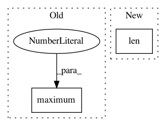

7e718f05dc0f21647f0fcb6599b20c200bc3189f,cnvlib/fix.py,,get_edge_bias,#Any#Any#,119
Before Change
losses = table.target_size.apply(edge_loss, args=(margin,))
// Find the leftmost tile in each tile"s margin
table["left_idx"] = np.maximum(0,
np.searchsorted(table.end, table.margin_start) - 1)
def row_gains(row):
Calculate the edge effects on this bin.
After Change
gaps_right = table.start[row.r_start_idx:row.r_end_idx] - row.end
return edge_gain(row.target_size, margin, gaps_right.min())
gains = np.zeros(len(table))
l_rows = table[table.l_start_idx < table.l_end_idx]
gains[l_rows.index.values] = l_rows.apply(l_row_gains,
axis=1, reduce=True)
In pattern: SUPERPATTERN
Frequency: 3
Non-data size: 2
Instances
Project Name: etal/cnvkit
Commit Name: 7e718f05dc0f21647f0fcb6599b20c200bc3189f
Time: 2016-01-13
Author: eric.talevich@gmail.com
File Name: cnvlib/fix.py
Class Name:
Method Name: get_edge_bias
Project Name: tensorflow/models
Commit Name: fcd690b14b04c11e7f25b9d473db056c4b7947b3
Time: 2020-09-30
Author: tanzheny@google.com
File Name: official/vision/keras_cv/ops/iou_similarity.py
Class Name:
Method Name: intersection
Project Name: tiberiu44/TTS-Cube
Commit Name: 9cf2bcdb24f23a17ec11e69b8885851771dfd3d8
Time: 2018-10-25
Author: boros@adobe.com
File Name: cube/models/vocoder.py
Class Name: BeeCoder
Method Name: learn